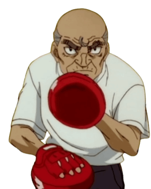

Es el actual entrenador del gimnasio, actualmente es un busca talentos (Descubrió a Takamura)y cuando Takamura descubrió el talento de Ippo y su "espíritu de pelea" desea entrenarlo ya que el piensa que "personas como Ippo solo se dan una vez en la vida" es muy dedicado con cada uno de los miembros del gimnasio. Siempre piensa en la integridad física de sus pupilos, tiene 72 años de edad (cuando Ippo entra al gimnasio) su vida como boxeador no fue muy buena, debido a la época en la que vivió, porque se ve que era muy buen boxeador.